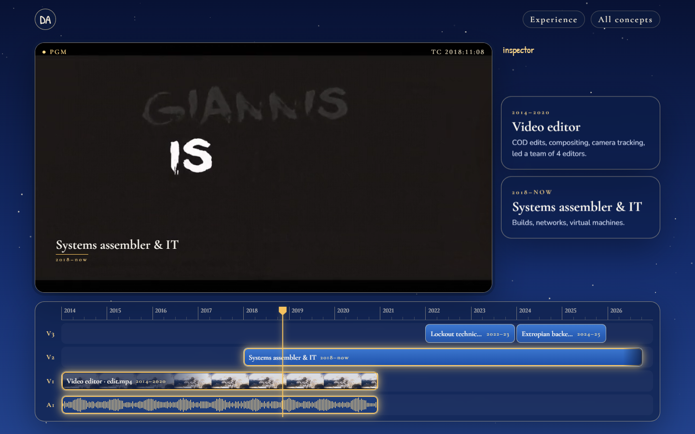
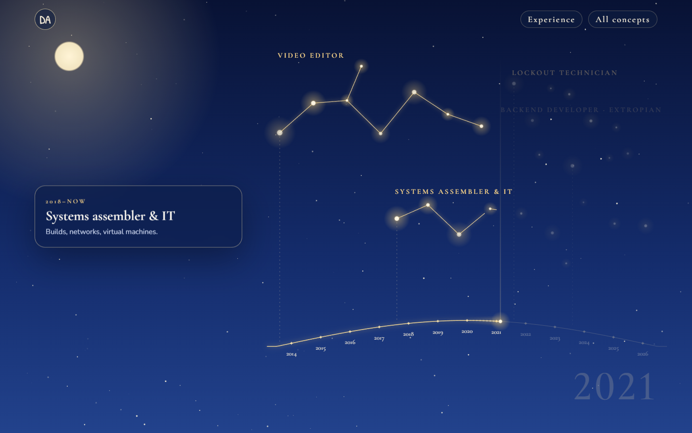
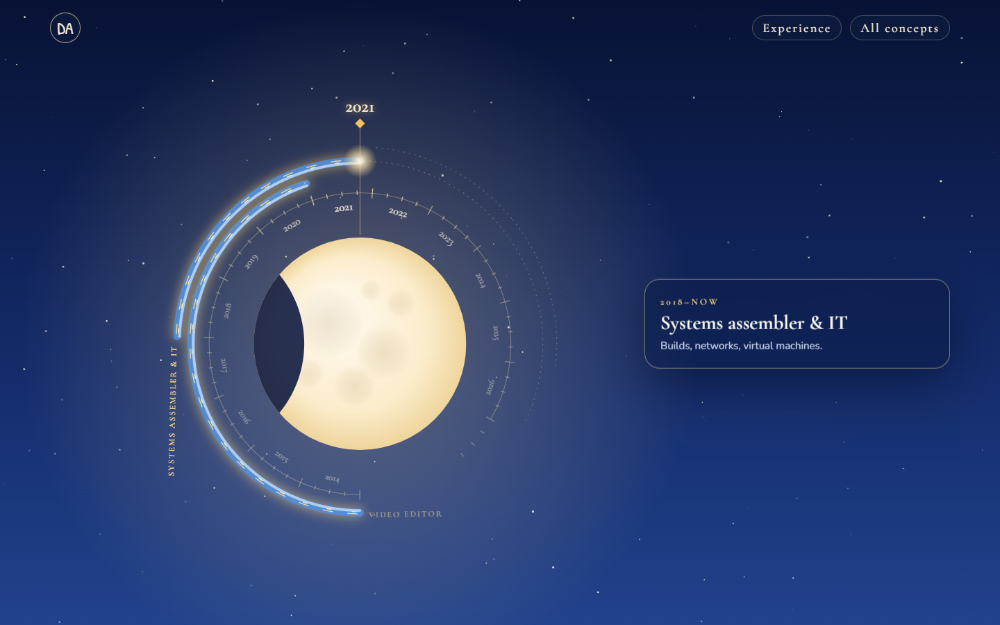
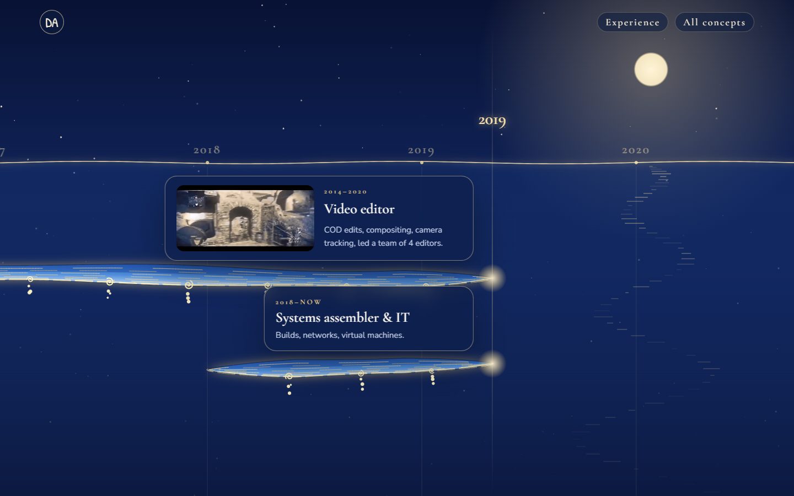
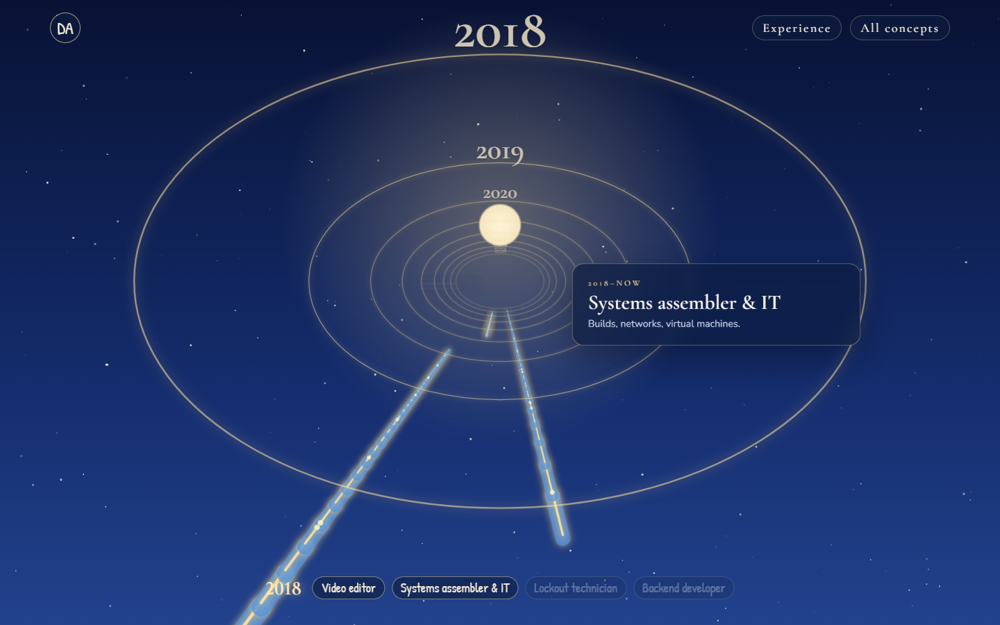

Experience timeline · lab
Five ways to put the four jobs on a timeline in the night-tide look. Each page is a hero stub plus the Experience section; scroll to drive it. Same facts on every page, and the periods overlap.

C · recommended ★Edit timeline
An editing app floating in the sky: each job is a clip on V1/V2/V3 with the reel's audio on A1. Scroll scrubs the playhead; the program monitor plays the reel, and the other jobs show as titles over it.

AConstellation
Each job is a star figure above a gold ecliptic of years. A comet moves along it, stars light up and the lines draw between them.

DMoon dial
The years form a dial around the moon. Jobs are gold water orbits at different radii. The dial turns so the current year stays at the top, and the moon waxes to full.

BTide lanes
A pinned horizontal scroll along a moonlit tide line. Each job is a water current in its own lane, and its card rides the current, then stops where the job ended.

EDepth flight
The camera flies forward through a gold halo for each year. Cards hang at the depth of their start year, and gold rails along the floor show how long each job lasted.